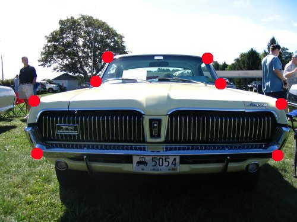
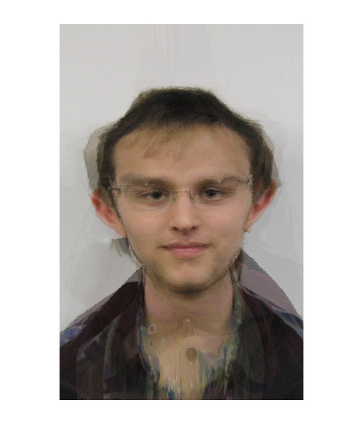
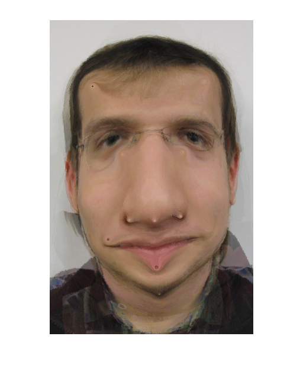
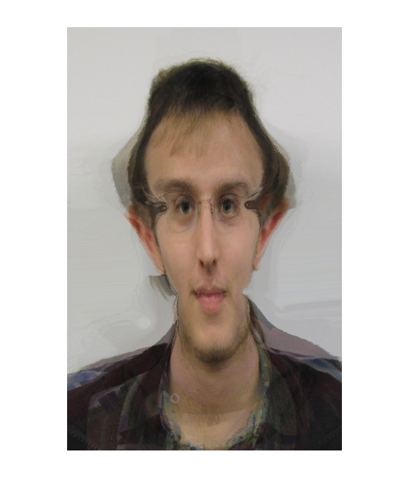

Project 5: Face Morphing (Writeup)
Jason Pacheco (pachecoj)
March 26, 2010
View Code View Data
Algorithm Description
The video to the right shows the results of the algorithm on the input set of faces. The algorithm computes 21 frames for each pair of images and performs morphing and blending with equal coefficients in the range [0,1] with increments of 1/21. I found that 18 correspondence points worked well enough.
Results
The results are shown in the video to the right. Below are the mean and median faces of the data set. Out of curiosity I computed the median face for comparison. There are some interesting comparisons, most notably you can clearly see glasses on the mean face, while there are none on the median. While both of them look predominantly male the median face looks much more plausibly male, furthermore the hair looks much more coherently like a short buzz cut on the median face. Finally, we see that smiling is aparently an outlier, since mean guy looks happier than median guy.
| Mean Guy | Median Guy |
Graduate Credit
Non-Face Input
For graduate credit I computed morphs on images of cars. I chose correspondence points as demonstrated in the image below. The following video shows the resulting output of the algorithm.
 |
Funny Faces
I also synthesized some faces using the median face shown above. I did this by simply by choosing new locations for the correspondence points of the mean face and computing a morph which morphs the mean face into one with the new correspondence point locations.
 |
 |
|
 |
{kind=link}
{kind=link}
{kind=link}
{kind=link}
{kind=link}
{kind=link}